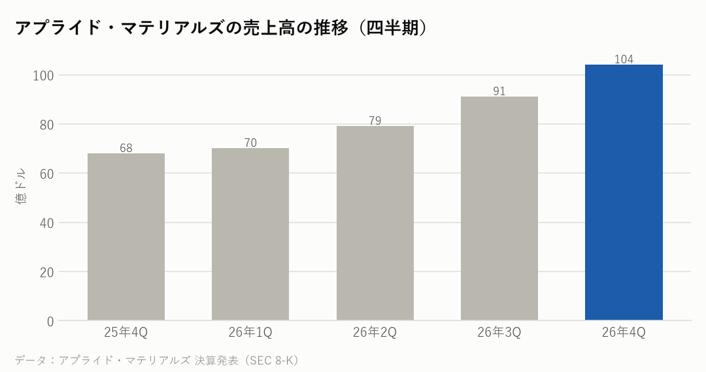
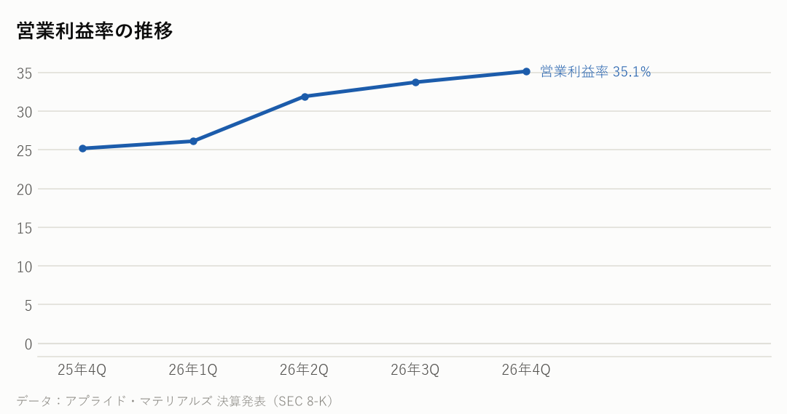

AMAT｜2026年8〜10月期（2026年度第4四半期）の決算｜決算発表 2026年11月12日（米国時間）
アプライド・マテリアルズの決算：売上は53%増なのに、なぜ純利益は43%増どまり？――投資先の株の評価損と、中国向けの割合の低下
半導体の製造装置で米国最大手のアプライド・マテリアルズの8〜10月期は、売上高が前年同期比53%増の104.1億ドルで、四半期として過去最高だった。営業利益は2.1倍の36.6億ドル、純利益は43%増の27.2億ドル。年間の売上高は344.5億ドルで、露光装置のASML（2026年の見通し440〜450億ユーロ）に次ぐ世界有数の規模。会社は、11〜1月期の売上高をさらに多い111億ドル前後と見込む。
主な数字（2026年8〜10月期（2026年度第4四半期））
| 今回 | 前年同期 | 前年比 | |
|---|---|---|---|
| 売上高 | 104億ドル | 68億ドル | +53.1% |
| 営業利益 | 37億ドル | 17億ドル | +113.7% |
| 営業利益率 | 35.1% | 25.2% | |
| 純利益 | 27億ドル | 19億ドル | +43.3% |
部門ごとの売上高（8〜10月期）
| 部門 | 売上高 | 前年同期比 |
|---|---|---|
| 半導体の製造装置 | 80.0億ドル | +63.9% |
| 保守などのサービス | 19.0億ドル | +25.9% |
| その他（ディスプレーなど） | 5.2億ドル | +24.6% |

会社の見通し
| 11〜1月期の売上高 | 111億ドル（上下5億ドルの幅）。前年同期の70.1億ドルより58%多い |
|---|---|
| 11〜1月期の1株利益（調整後） | 4.35ドル（上下0.20ドルの幅） |
| 2026年度（10月まで）の売上高 | 344.5億ドル（前年度比21%増、過去最高） |
- 11〜1月期の売上高は111億ドル（上下5億ドル）の見通しで、8〜10月期より約7%多い。
- 8〜10月期の売上高（104.1億ドル）と調整後の1株利益（4.16ドル）は、8月に会社が出した見通し（102.5億ドル・4.02ドル、どちらも幅の真ん中）を上回った。
- 社長は、2026年（暦年）の製造装置の部門の売上を40%以上伸ばせる見込みだと話した。
もうけの力

同業の製造装置の会社と比べると
期間はアプライド・マテリアルズが2026年8〜10月、ほかの3社は2026年7〜9月。利益率は営業利益率。各社の決算資料から。通貨がそろわないので、伸び方と利益率で比べてください。
| 会社 | 売上高 | 前年比 | 利益率 |
|---|---|---|---|
| アプライド・マテリアルズ | 104.1億ドル | +53.1% | 35.1% |
| ラムリサーチ | 82.2億ドル | +54.4% | 40.0% |
| KLA | 41.4億ドル | +28.9% | 45.0%※1 |
| 東京エレクトロン | 9,351億円 | +48.4% | 31.6% |
得意な装置が違う。アプライド・マテリアルズは成膜・エッチングなど幅広い装置、ラムリサーチはエッチング・成膜、KLAは検査・計測、東京エレクトロンは塗布・現像や成膜・エッチング。売上には保守などのサービスも入る。決算期が1か月ずれている（アプライド・マテリアルズは8〜10月）。※1 KLAは営業利益を発表していないため、売上高から売上原価・研究開発費・販売管理費を引いて計算。露光装置のASML（オランダ）は7〜9月期の売上高が116.6億ユーロだったが、発表資料に前年比と営業利益の記載がないため載せていない。
NasdaqWhy の視点：データから読み取れる注目点
決算資料と各社の公式データを並べて読み取れることです。将来を予想するものではありません。
- 【なぜ純利益の伸びが売上より小さいか】営業利益は2.1倍に増えたが、純利益は43%増にとどまった。会社が出資している会社の株の値下がりによる評価損（1株あたり0.68ドル分）が出たため。1年前の同じ時期は、逆に評価益（1株あたり0.43ドル分）が利益を押し上げていた。こうした一時的なものを除いた調整後の1株利益は4.16ドルで、前年同期の2.17ドルから92%増えた。
- 【なぜ利益率が上がったか】営業利益率は35.1%で、1年前の25.2%から上がった。利益率の高い製造装置の部門（売上総利益率55.0%）の売上が64%増えて、全体に占める割合が大きくなった。サービスの部門の売上総利益率は35.1%。1年前は事業の整理の費用（1株あたり0.19ドル分）も出ていた。
- 【なぜDRAM向けが増えたか】製造装置の売上のうち、DRAM（メモリー）向けは33%で、1年前の28%から増えた。ファウンドリ・ロジック向けは58%（1年前は66%）、フラッシュメモリー向けは9%（6%）。AI向けのHBMなど、メモリーの会社の投資が強いことが表れている。
- 【なぜ中国向けの割合が下がったか】地域別の売上で、中国は25%（26.4億ドル）と、1年前の29%から下がった。金額は増えたが、台湾（29.2億ドル）・韓国・米国向けがそれ以上に伸びた。米国の輸出規制で、最先端の装置は中国に売れない。会社は2026年度に、輸出規制の手続きをめぐって米商務省と2.53億ドルで和解している。
- 【なぜ設備投資を増やすか】2026年度の設備投資は26.7億ドルで、前年度の22.6億ドルから増えた。会社は8月に、2030年ごろまでの需要に備えて生産能力への投資を追加していると説明していた（会社の発表より）。
- 【同業と比べると】伸び方はラムリサーチ（+54%）とほぼ同じで、KLA（+29%）を上回った。営業利益率は、KLA（45%・計算値）、ラムリサーチ（40%）より低く、東京エレクトロン（32%）より高い。アプライド・マテリアルズは幅広い装置を扱い、利益率の低いサービスやディスプレーの事業も含むため、検査装置が中心のKLAとは事業の中身が違う。
- 2026年度の1年間では、売上高344.5億ドル（前年度比21%増）、1株利益12.62ドル（46%増）。自社株買い31.8億ドルと配当15.7億ドルで、合わせて47.5億ドルを株主に返した。8〜10月期の自社株買いは20億ドルで、8年以上でいちばん多かった。
- 製造装置は、半導体を作る工場（前工程・後工程）に欠かせない機械で、サプライチェーンでは材料の次の段にあたる。装置の会社の見通しは、TSMC・サムスン電子・SK hynix などの投資の勢いを映す。
次に確認したい決算・予定
- エヌビディアの決算（11月下旬の見込み）：AI向けの半導体の需要が、装置の投資を支えるか。
- TSMC・SK hynixの次の決算（2027年1月の見込み）：2027年の設備投資の計画。
- アプライド・マテリアルズの次の決算（2027年2月の見込み）：11〜1月期が見通しの111億ドル前後になったか、中国向けの割合。
関連リンク
出典：アプライド・マテリアルズ 2026年度第4四半期の決算発表（2026年11月12日、SEC 8-K）、第1〜第3四半期の決算発表（2026年2月・5月・8月）、2026年8月の決算説明の報道（Nasdaq/MarketBeat）。同業はラムリサーチ（2026年10月21日）・KLA（2026年10月28日）・ASML（2026年10月14日）の決算発表（SEC）、東京エレクトロンの決算短信
📝 note でも読めます（図つき・まとめ）：note.com/nasdaqwhy